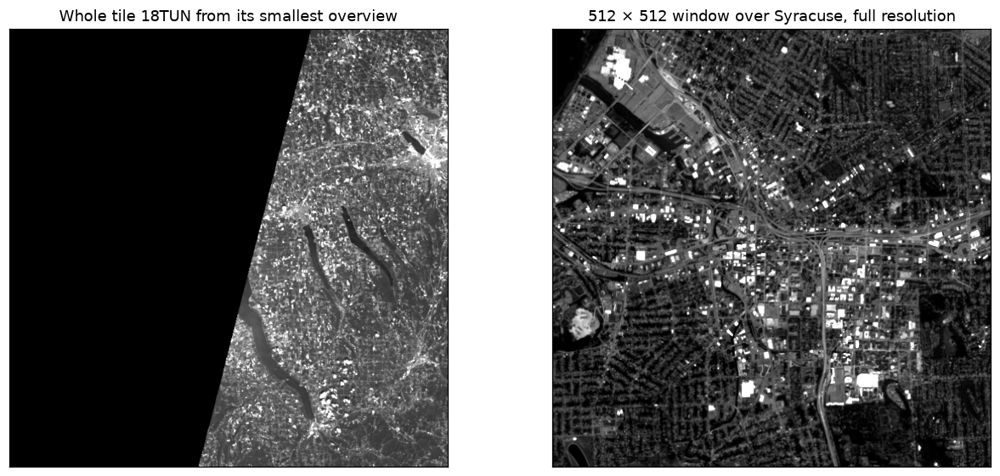
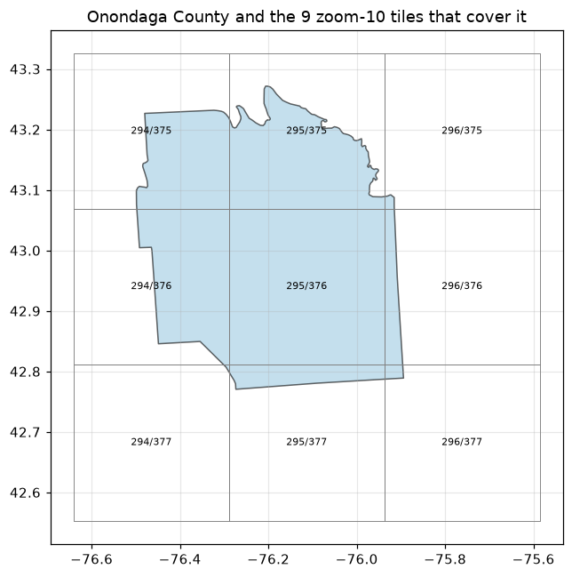
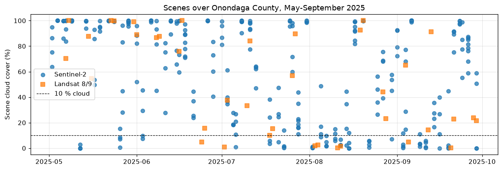

Desktop GIS keeps data and computing on one machine. Web GIS puts maps and services on a server that anyone can reach with a browser; cloud GIS moves the data and the computing themselves into large shared infrastructure, where petabytes of imagery already live. This notebook introduces the ideas that the rest of Module 08 builds on: how the pieces of a web or cloud GIS fit together, which standards connect them, why “cloud-native” file formats matter, how web maps are tiled, and where to find data. Every idea is tried out with GeoLattice on real data.
Twelve notebooks take maps and analysis from one machine onto the web and into cloud data stores.
Web/Cloud GIS. This notebook. Desktop, web and cloud GIS, the standards that connect them (WMS, WMTS, WFS, OGC API, STAC, TileJSON, XYZ), HTTP range requests, the tile pyramid, and finding imagery with geolattice.rsense.get_images.
Cloud-Native Rasters: COG, Zarr and STAC. Sentinel-2 over Syracuse: check and write Cloud-Optimized GeoTIFFs, a multi-date Zarr cube, and a STAC catalogue whose footprints are stored as GeoParquet.
Cloud-Native Vectors: GeoParquet, FlatGeobuf and PMTiles. Every union of Bangladesh as GeoParquet, FlatGeobuf, PMTiles, GeoPackage and GeoJSON Sequences, and how many bytes each format transfers over HTTP.
Spatial SQL: DuckDB, GeoPackage and PostGIS. DuckDB on Bangladesh files, the same queries against a GeoPackage, and how those queries move to PostGIS.
Interactive Web Maps in Python: Folium, leafmap and lonboard. Folium, leafmap and lonboard maps of Bangladesh poverty, rice-field arsenic, 37,923 soil samples and Syracuse NDVI, and what each map sends to the browser.
Serving Maps: Tiles and OGC APIs. Raster tiles and an OGC API: Features service with geolattice.web, plus PMTiles shown in MapLibre, all on localhost.
Building Geospatial APIs with FastAPI. A FastAPI service for Bangladesh: the union at a point, soil pH, and a district NDVI series, with API keys, rate limits and background jobs.
Web Apps for Geospatial Data: Streamlit, Panel and Solara. The same Bangladesh district explorer in Streamlit, Panel and Solara, sharing one Python module for the data and the figures.
Scalable Processing: Dask, GPUs and Batch Jobs. A Theil-Sen trend of monthly MODIS NDVI anomalies, 2000-2024, for every 1 km land pixel of Bangladesh, scaled with Dask, a GPU and batch jobs.
Cloud Platforms: Planetary Computer, Earth Engine and Copernicus openEO. Planetary Computer, Earth Search and Copernicus catalogues beside Earth Engine and openEO, including a cloud-free NDVI composite and a haor-district summary.
DevOps for Geospatial Pipelines: Packaging, Testing, CI, Containers and Schedules. The haor_monitor pipeline for Tanguar Haor: a package, tests, continuous integration, a container and a schedule.
Capstone: A Cloud Web-GIS for Flood Monitoring in the Haor Basin. A flood web-GIS for the haor basin around Tanguar Haor and Sunamganj in 2024: Sentinel-1 water maps, statistics by union, tiles, an API and a web map.
Library: geolattice.web, with imagery search in geolattice.rsense.
Learning objectives
Distinguish desktop, web and cloud GIS, and describe the layers of a cloud GIS system.
Name the main OGC and community standards (WMS, WMTS, WFS, OGC API, STAC, TileJSON, XYZ).
Explain HTTP range requests and measure how little data a cloud-native read transfers.
Work with the XYZ tile pyramid used by every web map.
Search imagery catalogues with geolattice.rsense.get_images and inspect what is available.
Weigh cost, egress, licensing and data-location questions when choosing where to compute.
Data
Data
Source
New York county boundaries
Data/00_shared/vector_data/USA/NY_County_GCS.shp
Sentinel-2 L2A band 4 (red), tile 18TUN, 2 August 2025
Read remotely from the public AWS bucket sentinel-cogs
Sentinel-2, Landsat and NAIP scene lists
Searched with geolattice.rsense.get_images.search_images (Earth Search on AWS)
The shift from desktop to cloud is driven by data volume. The Landsat and Sentinel archives are several petabytes and grow by terabytes a day. Downloading them is impractical, so the modern pattern is the reverse: bring the code to the data, read only the pixels needed, and send results (maps, tables, tiles) to users.
The layers of a cloud GIS
Layer
Role
Examples
In GeoLattice
Storage
Keep files cheaply and durably, served over HTTP
Amazon S3, Google Cloud Storage, Azure Blob, on-premise MinIO
geolattice.web.to_vsi_path, cloud_env
Formats
Arrange files so parts can be read without downloading everything
Notebooks 08_01-08_10 follow these layers from bottom to top; the capstone (08_11) joins them.
Standards that connect the pieces
Standards let any client talk to any server. The Open Geospatial Consortium (OGC) defines most of them; STAC and the tile conventions come from the community.
Standard
What it serves
Style
WMS (Web Map Service)
Rendered map images for a bounding box
Classic OGC, XML capabilities
WMTS (Web Map Tile Service)
Pre-cut map tiles
Classic OGC
WFS (Web Feature Service)
Vector features
Classic OGC, GML
WCS (Web Coverage Service)
Raster data values
Classic OGC
OGC API: Features / Tiles / Maps / Processes
The modern successors: features, tiles, maps, processing
REST + JSON, OpenAPI
XYZ / TMS tiles
256 × 256 images addressed by zoom, column and row
Community convention
TileJSON
Metadata for a tile layer (URL template, bounds, zooms)
Community (Mapbox)
STAC (SpatioTemporal Asset Catalog)
Catalogues of imagery and other assets
Community, JSON, now an OGC Community Standard
GeoJSON
Features in JSON
IETF RFC 7946
The rule of thumb today: OGC API + GeoJSON for vector services, XYZ tiles + TileJSON for maps, STAC for catalogues, COG / Zarr / GeoParquet for files.
Setup
Installation. This notebook needs installation option 6 (every GeoLattice module): pip install "geolattice[all]". See “Installation options” in the GeoLattice README.
Code
# Setup: imports, plot defaults, and the New York county AOI used throughout%matplotlib inlineimport warningswarnings.filterwarnings("ignore", category=UserWarning)import jsonimport timefrom pathlib import Pathimport numpy as npimport pandas as pdimport geopandas as gpdimport matplotlib.pyplot as pltimport geolatticeimport geolattice.web as webfrom geolattice.rsense.get_images import bands_for, list_collections, search_images# Load NY counties and keep Onondaga as the working study areaplt.rcParams.update({"figure.dpi": 110, "axes.grid": True, "grid.alpha": 0.3})DATA = Path("../../../Data")counties = gpd.read_file(DATA /"00_shared"/"vector_data"/"USA"/"NY_County_GCS.shp")onondaga = counties[counties["COUNTY"] =="Onondaga County"]SYRACUSE = (-76.25, 43.00, -76.10, 43.10) # lon/lat box around the cityprint("geolattice", geolattice.__version__, "| counties:", len(counties), "| Onondaga bounds:",tuple(round(v, 3) for v in onondaga.total_bounds))
A web server normally sends a whole file. With an HTTP range request (Range: bytes=a-b) the client asks for only part of it, and the server answers 206 Partial Content. Cloud object stores all support this. A file is cloud-native when its layout lets a client find the bytes it needs from a small header: a Cloud-Optimized GeoTIFF stores its headers first and its pixels in independent tiles, so reading one area costs a few small requests.
First we ask the server about one Sentinel-2 band on AWS:
Code
# Inspect a public Sentinel-2 COG URL without downloading the whole fileCOG_URL = ("https://sentinel-cogs.s3.us-west-2.amazonaws.com/sentinel-s2-l2a-cogs/""18/T/UN/2025/8/S2C_18TUN_20250802_0_L2A/B04.tif")info = web.remote_info(COG_URL)pd.Series(info).to_frame("value")
value
url
https://sentinel-cogs.s3.us-west-2.amazonaws.c...
status
206
size
91274825
content_type
image/tiff; application=geotiff; profile=cloud...
range_requests
True
etag
"c5c60cdc492a1263fcb5fba3ea6846c1-11"
error
None
Now we read pixels with GDAL, which records how many bytes it downloads. We read twice: a 512 × 512 window over Syracuse at full resolution (10 m), and the whole 110 × 110 km tile from its smallest overview.
# Side-by-side: coarse overview of the tile vs the full-res Syracuse windowfig, axes = plt.subplots(1, 2, figsize=(12, 5.2))axes[0].imshow(overview, cmap="gray", vmin=0, vmax=np.percentile(overview[overview >0], 98))axes[0].set_title("Whole tile 18TUN from its smallest overview")axes[1].imshow(window, cmap="gray", vmin=np.percentile(window, 2), vmax=np.percentile(window, 98))axes[1].set_title("512 × 512 window over Syracuse, full resolution")for a in axes: a.set_xticks([]); a.set_yticks([]); a.grid(False)plt.tight_layout(); plt.show()

The red band is a 91 MB file of 10,980 × 10,980 pixels, and the server answers range requests (status 206). Reading a 512 × 512 window over Syracuse transferred about 2.2 MB in two requests, 2.5% of the file. Reading the whole 110 × 110 km tile at its smallest overview transferred 0.29 MB, 0.3%.
The window cost more than its 0.5 MB of pixels because this COG is cut into 1,024 × 1,024 blocks: GDAL must fetch every block the window touches, here up to four. Block size is a design choice that Notebook 08_01 explores.
The overview image shows why overviews exist: a zoomed-out view of a whole Sentinel-2 tile needs only one small request. The black wedge on its left lies outside this orbit’s 290 km imaging swath. Timings (one to several seconds here) depend mostly on network latency, not on the number of bytes, which is why cloud-native reads try to need few requests.
The XYZ tile pyramid
Web maps cut the world into 256 × 256-pixel tiles in the Web Mercator projection. At zoom 0 one tile covers the world; each zoom level doubles the number of tiles in each direction. A tile is addressed by its zoom, column and row: {z}/{x}/{y}. geolattice.web implements the tile arithmetic.
Code
# Build a Web Mercator zoom pyramid table for Syracuse / Onondagalat =43.05rows = []for z in [0, 2, 5, 8, 10, 12, 14, 16, 18]: t = web.lonlat_to_tile(-76.15, lat, z) rows.append({"zoom": z, "tiles in the world": f"{4** z:,}","pixel size at equator (m)": round(web.tile_resolution(z), 2),f"pixel size at {lat}°N (m)": round(web.tile_resolution(z, latitude=lat), 2),"tile containing Syracuse": f"{t.z}/{t.x}/{t.y}","tiles covering Onondaga County": len(list(web.tiles_for_bounds(*onondaga.total_bounds, zooms=z)))})pyramid = pd.DataFrame(rows).set_index("zoom")pyramid
tiles in the world
pixel size at equator (m)
pixel size at 43.05°N (m)
tile containing Syracuse
tiles covering Onondaga County
zoom
0
1
156543.03
114395.12
0/0/0
1
2
16
39135.76
28598.78
2/1/1
1
5
1,024
4891.97
3574.85
5/9/11
1
8
65,536
611.50
446.86
8/73/94
4
10
1,048,576
152.87
111.71
10/295/376
9
12
16,777,216
38.22
27.93
12/1181/1504
72
14
268,435,456
9.55
6.98
14/4726/6017
896
16
4,294,967,296
2.39
1.75
16/18905/24068
13986
18
68,719,476,736
0.60
0.44
18/75621/96274
220941
Code
# Match common sensor resolutions to zoom levels, then map Onondaga tiles at z=10print("Zoom whose pixels match each sensor at Syracuse:")for sensor, res in [("MODIS 250 m", 250), ("Landsat 30 m", 30), ("Sentinel-2 10 m", 10), ("PlanetScope 3 m", 3), ("NAIP 0.6 m", 0.6)]:print(f" {sensor:16s} → zoom {web.zoom_for_resolution(res, latitude=lat)}")# Draw the zoom-10 tile grid over Onondaga Countyz =10tiles =list(web.tiles_for_bounds(*onondaga.total_bounds, zooms=z))grid = gpd.GeoDataFrame({"tile": [f"{t.z}/{t.x}/{t.y}"for t in tiles]}, geometry=[__import__("shapely.geometry", fromlist=["box"]).box(*web.tile_bounds(*t)) for t in tiles], crs=4326)ax = grid.boundary.plot(color="grey", lw=0.6, figsize=(6.5, 6))onondaga.plot(ax=ax, color="#9ecae1", alpha=0.6, edgecolor="k")for _, r in grid.iterrows(): c = r.geometry.centroid ax.annotate(r.tile.split("/", 1)[1], (c.x, c.y), ha="center", va="center", fontsize=7)ax.set_title(f"Onondaga County and the {len(tiles)} zoom-{z} tiles that cover it")plt.tight_layout(); plt.show()
Zoom whose pixels match each sensor at Syracuse:
MODIS 250 m → zoom 9
Landsat 30 m → zoom 12
Sentinel-2 10 m → zoom 14
PlanetScope 3 m → zoom 16
NAIP 0.6 m → zoom 18

Each zoom level halves the pixel size. At Syracuse’s latitude, map pixels match Landsat’s 30 m at zoom 12, Sentinel-2’s 10 m at zoom 14 and NAIP’s 0.6 m at zoom 18. Those are the deepest zooms worth rendering for each dataset; beyond them a tile server only enlarges pixels.
The number of tiles grows fourfold per level: Onondaga County fits in 9 tiles at zoom 10, 72 at zoom 12 and 896 at zoom 14. This growth is why tile servers render on demand and cache, rather than pre-rendering every level for large areas (Notebook 08_05).
Finding data: catalogues and get_images
Cloud imagery is found through catalogues. geolattice.rsense.get_images gives one interface to five of them, the same ones the PyGIS Explorer app uses:
search_images(...) lists scenes for an area and dates and downloads nothing;
get_images(out, ...) searches and writes the selected scenes (clipped to the area, or whole) into a folder, with an aoi.geojson and a request.json recording the request.
Note that geolattice.rsense.get_images is a module; import the functions from it.
Code
# List STAC sources available through geolattice and show example band namescatalogue = pd.DataFrame([{"source": s, "collections": len(c), "examples": ", ".join(c[:4]) + (" …"iflen(c) >4else"")}for s, c in list_collections().items()]).set_index("source")display(catalogue)print("Sentinel-2 L2A bands:", ", ".join(bands_for("sentinel-2-l2a")))print("Landsat C2 L2 bands: ", ", ".join(bands_for("landsat-c2-l2")))
Searches accept a bounding box or any area: a vector file, a GeoDataFrame or a shapely geometry. Here the area is the Onondaga County polygon, and we look for Sentinel-2 and Landsat scenes in the 2025 growing season and the latest NAIP aerial photography.
302 scene(s) from earth-search / sentinel-2-l2a
38 scene(s) from earth-search / landsat-c2-l2
33 scene(s) from earth-search / naip
scenes
distinct dates
scenes ≤ 10 % cloud
Sentinel-2 L2A, May-Sep 2025
302
67
56.0
Landsat 8/9 C2 L2, May-Sep 2025
38
38
8.0
NAIP (latest)
33
6
NaN
Code
# Plot cloud cover over the season; peek at a few NAIP acquisitionsfig, ax = plt.subplots(figsize=(11, 3.8))for df, name, mk in [(s2_df, "Sentinel-2", "o"), (ls_df, "Landsat 8/9", "s")]: ax.scatter(pd.to_datetime(df["date"]), df["cloud"], marker=mk, label=name, alpha=0.75)ax.axhline(10, color="k", ls="--", lw=0.8, label="10 % cloud")ax.set_ylabel("Scene cloud cover (%)"); ax.set_title("Scenes over Onondaga County, May-September 2025")ax.legend(); plt.tight_layout(); plt.show()iflen(naip_df):print(f"NAIP: {len(naip_df)} quarter-quad images, acquired {naip_df['date'].min()} to {naip_df['date'].max()}") display(naip_df[["id", "date"]].head(3))

NAIP: 33 quarter-quad images, acquired 2022-07-09 to 2022-11-08
id
date
0
ny_m_4207509_sw_18_060_20221108
2022-11-08
1
ny_m_4207501_sw_18_060_20221108
2022-11-08
2
ny_m_4207501_nw_18_060_20221108
2022-11-08
For May-September 2025, Earth Search lists 302 Sentinel-2 L2A scenes over Onondaga County on 67 dates. The county is covered by several 110 km tiles and two orbits, so most dates have several scenes; 56 scenes were at most 10% cloudy. Landsat 8 and 9 give 38 scenes on 38 dates, 8 of them at most 10% cloudy. The latest NAIP aerial survey (33 quarter-quadrangle images) was flown between July and November 2022.
The plot shows the usual pattern for a humid region: most scenes are cloudy, and clear ones come in spells, here mainly August and September. Sentinel-2’s denser revisits are what make cloud-free monitoring possible. All of this took a few seconds and downloaded only metadata.
A web service in a few lines
A web GIS answers HTTP requests with JSON, images or HTML. geolattice.web.create_app builds a small server for vector layers (OGC API: Features) and rasters (XYZ tiles). We start one for the New York counties and talk to it the way a browser would, with Starlette’s test client (Notebook 08_05 runs it as a real server).
Code
# Spin up an in-process OGC API Features app and query counties near Syracusefrom starlette.testclient import TestClientapp = web.create_app(vectors={"ny_counties": counties}, title="New York counties")client = TestClient(app)landing = client.get("/").json()print("Landing page links:", [l["rel"] for l in landing["links"]])collection = client.get("/collections/ny_counties").json()print("Collection extent:", [round(v, 3) for v in collection["extent"]["spatial"]["bbox"][0]])r = client.get("/collections/ny_counties/items", params={"bbox": ",".join(map(str, SYRACUSE)), "limit": 10})fc = r.json()print(f"GET {r.url}\n→ {r.status_code}{r.headers['content-type']}: "f"{fc['numberMatched']} feature(s): {[f['properties']['COUNTY'] for f in fc['features']]}")
The same three requests work from any language or tool: a browser, curl, QGIS (which reads OGC API: Features directly), or JavaScript in a web page.
Cost, egress, licensing and location
Question
Why it matters
Egress
Cloud providers charge for data leaving their network (often around $0.05-0.09 per GB), not for reading inside the same region. Computing in the region where the data live (us-west-2 for Earth Search’s Sentinel-2) is cheaper and faster.
Requester pays
Some buckets (USGS Landsat on S3) bill the reader; cloud_env(requester_pays=True) acknowledges this.
Storage class and format
Cloud-native formats cut both transfer and compute; compressed COG and GeoParquet are often a third of the size of plain files.
Open data (Landsat, Copernicus) may be redistributed; commercial imagery usually may not be served publicly.
Data location (sovereignty)
Health, personal or government data may have to stay in a country or on premises; object storage like MinIO gives cloud-style access on local hardware.
Lock-in
Open formats (COG, Zarr, GeoParquet) and open standards (STAC, OGC API) keep data and code portable between providers.